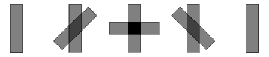
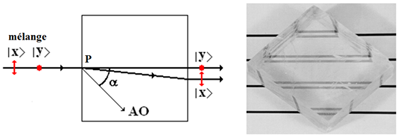
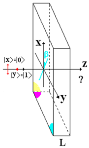
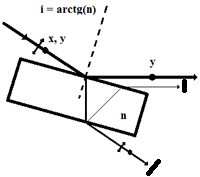
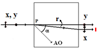

Sans précaution particulière, les photons qui composent la lumière émise par une source ordinaire (soleil, lampe à incandescence, led, ... ) sont dans un état de polarisation aléatoire (Leur hélicité est distribuée aléatoirement, Sz = -1, -1, +1, +1, +1, -1, +1, ...). Si l'on désire travailler un faisceau de photons tous polarisés de la même manière (linéaire ou circulaire) il y a lieu de les préparer.
Quiconque a étudié les lois de Malus ou qui a manipulé des films polaroïds sait que ceux-ci filtrent la lumière de la manière suivante :
- Si l'on envoie une pluie de photons incohérents sur un film polariseur, une moitié seulement de la lumière atteint le détecteur situé en aval.

Polariseurs croisés à 0°, 45°, 90°, 135°, 180°
- Si l'on dispose un second film polariseur en série derrière le premier et tourné d'un angle θ par rapport à lui, autour de l'axe optique, on constate que le détecteur situé en aval n'enregistre plus que la fraction 0.5 cos2θ de l'intensité initiale. En particulier, si les polariseurs sont croisés à, θ = 90°, plus aucune lumière ne parvient au détecteur et s'ils sont alignés (θ = 0°), une moitié de l'intensité reste détectée comme s'ils ne faisaient qu'un (le deuxième polariseur n'a eu aucun effet).
Polariseurs croisés
On interprète classiquement ces résultats en assimilant la lumière à une onde électromagnétique dont l'énergie est proportionnelle au carré du champ électrique. On admet que tout polariseur linéaire possède une direction (transversale) passante et la direction (transversale) orthogonale bloquante (absorbante) de sorte que seule passe la composante du champ électrique parallèle à la direction passante. La lumière sort du film polarisé linéairement selon sa direction passante du polariseur. Le hic c'est que cette interprétation est héritée de la théorie ondulatoire or l'expérience de Taylor démontre que la lumière est de nature corpusculaire.
Il est nettement plus facile de préparer un faisceau de photons polarisés linéairement, selon x ou y, que de les préparer polarisés circulairement, à gauche ou à droite. Voyons comment on peut s'y prendre dans les deux cas.
Il existe plusieurs procédés capables de préparer un flux de photons dans un état de polarisation rectiligne . Les instruments précis sont taillés soit dans des matériaux isotropes ou anisotropes. La première catégorie comprend essentiellement des verres purs d'indices de réfraction parfaitement connus et la deuxième utilise des cristaux biréfringents du type calcite (CaCO3). Un rappel sur la notion de biréfringence s'impose à ce stade.
Biréfringence optique.
La structure atomique du verre ordinaire ne présente aucune irrégularité motivique décelable, ce qui le rend isotrope : la lumière s'y propage avec la même vitesse, v, dans toutes les directions. Sa valeur est simplement réduite d'un facteur, n = c/v (typiquement de l'ordre de 1.5), appelé indice de réfraction du verre.
Cristal de calcite
Les opticiens taillent également leurs instruments dans des matériaux anisotropes, où la vitesse de la lumière varie selon la direction de propagation et l'état de polarisation. Cette variation, régulée par les lois de la cristallographie, n'est simple que pour les cristaux uniaxes, en particulier la calcite (CaCO3). Dans celle-ci, les atomes sont disposés avec régularité conformément à la maille élémentaire représentée ci-contre. Un axe unique (d'où l'appellation "cristal uniaxe") y joue un rôle essentiel, c'est l'axe optique encore appelé axe lent parce que c'est selon cette direction que la lumière se propage le plus lentement dans le cristal. Par contre, elle est maximum dans n'importe quelle direction orthogonale (et intermédiaire dans tous les autres cas).

Biréfringence (calcite)
Une lame de calcite taillée de telle manière que l'axe optique se trouve dans le plan d'incidence et éclairée par un faisceau de lumière naturelle, dédouble celui-ci à la sortie. En particulier, posée sur une trame préimprimée, elle fait apparaître deux images de celle-ci. Les photons polarisés linéairement selon l'axe transversal Oy (orthogonal au plan d'incidence) suivent la trajectoire rectiligne attendue, tandis que ceux qui sont polarisés selon la direction perpendiculaire, Ox (donc dans le plan d'incidence), suivent une trajectoire anormale. Tout se passe donc comme si cette lame triait les photons selon leur état de polarisation. Ce montage peut est utile toutes les fois que l'on désire préparer un faisceau de photons dans un état de polarisation donné, x ou y : il suffit d'occulter le sous-faisceau indésirable.
Note. Le tri des photons (tout comme la figure qui l'accompagne) est une expression potentiellement dangereuse, comme toutes celles qui véhiculent une interprétation littéraire pouvant prêter à confusion. Elle pourrait laisser sous-entendre que chaque photon possède un état de polarisation préexistant que la lame ne fait que révéler. Ce n'est pas l'interprétation communément admise (dite de Copenhague) qui pose que chaque photon émis par une source incohérente demeure dans un état de polarisation indéterminé aussi longtemps qu'on n'a pas procédé à sa mesure. Dans ce cas, c'est la lame qui effectue cette mesure et elle projette l'état du photon dans la variante x ou y. Cette discontinuité "objective" fait parfois débat parmi les physiciens et une école, marginale il est vrai, fait actuellement sécession qui considère que la mesure est propre à l'observateur donc "subjective". Cette querelle heureusement sans conséquence au plan des calculs prédictifs rappelle la querelle qui sépare les spécialistes du calcul des probabilités entre fréquencistes et bayesiens.
Etats purs de polarisation sur calcite
Pour préparer un flux de photons en états de superposition x et y, il faut faire en sorte que les deux sous-faisceaux demeurent confondus. Si on éclaire la lame au moyen d'une lumière préparée dans un état de polarisation linéaire déterminée, x ou y, par exemple en ne retenant qu'un seul faisceau à la sortie du montage précédent, on observe évidemment que les photons suivent la trajectoire autorisée correspondant à leur état initial. Les deux trajectoires issues de P font entre elles un angle, r, donné par la relation, tg(r) = [(no2 - ne2) sinα cosα]/[ no2 sin2α + ne2 cos2α ], où no et ne sont les indices de réfraction ordinaire (dans la direction parallèle à l'axe optique) et extraordinaire (dans la direction perpendiculaire). L'état de polarisation des photons ne varie pas dans ce cas. Pour agir sur l'état de polarisation il faut tailler la lame autrement. Cet angle est nul dans deux cas : si α vaut 0° ou 90°. Le cas, α = 0°, n'est pas intéressant car dans la direction de l'axe optique tout se passe comme si la lumière traversait un verre ordinaire. Par contre, le cas, α = 90°, est essentiel en optique quantique, à tel point que lorsqu'on parle d'une lame biréfringente, sans autre précision, celle-ci est taillée de telle manière que l'axe optique soit parallèle à la face d'entrée.

Lame biréfringente comme porte logique
On obtient une lame active en polarisation si on la taille dans un matériau biréfringent (calcite par ex.) de telle manière que l'axe optique (donc lent, en vert sur la figure ci-contre) soit parallèle à la face d'entrée (donc perpendiculaire à la direction incidente). Cette lame permet de modifier l'état de polarisation de la lumière incidente à la carte car deux degrés de libertés sont disponibles : l'angle, β, que fait l'axe optique avec l'axe x et l'épaisseur, L, de la lame, plus exactement l'angle de déphasage qu'elle induit, d = 2p Δn L/λ, où Δn = n0-ne (= 1.658 - 1.486 = 0.172, à λ = 590 nm).
Connaissant les valeurs de ces deux paramètres, β et δ, on peut prédire l'état de polarisation sortante de tout photon qui traverse cette lame, à condition de connaître son état de polarisation entrante. Il suffit d'appliquer l'opérateur "Lame" à l'état entrant, conformément à la relation,
En fait, on considère rarement le cas général car quelques cas particuliers suffisent, en pratique :
Lame(π/4,π) = i ( |0><1| + |1><0| ) inverse le qubit à un déphasage inessentiel près
Lame(π/8,π) = i ( |0><0| + |0><1| + |1><0| - |1><1| )/✓2 fournit la porte de Hadamard
Lame(π/4, π/2) = ( |0><0| + i |0><1| + i |1><0| + |1><1| )/✓2 transforme |0> en (|0>+i|1>)/✓2 (polarisation circulaire)
Lorsque d = p, on parle de lame demi-onde et lorsque d = p/2, on parle de lame quart d'onde.
Selon les valeurs conférées à, β et δ, la lame est capable de transformer :
- un photon x (ou y) en photon y (ou x) et, plus généralement, en n'importe quelle polarisation linéaire oblique
- un photon x (ou y) en photon D (ou G)
- un photon D (ou G) en photon x (ou y) ou, plus généralement, en n'importe quelle polarisation linéaire oblique
Pour préparer un faisceau de photons x (ou y) à partir d'un faisceau naturel, au moins trois stratégies peuvent être envisagées :

Préparation d'états purs
Une simple lame de verre, d'indice n, orientée sous l'angle d'incidence de Brewster, i = arctg(n),
a pour effet de ne réfléchir directement que des photons polarisés linéairement selon y (perpendiculairement au plan d'incidence). On obtient un faisceau émergent certes diminué en intensite mais pur en polarisation rectiligne en écartant à l'aide d'écrans les photons ayant subi des réflexions multiples. On ne garde donc que les photons ayant subi la réflexion principale.

Préparation d'états purs
Une lame biréfringente uniaxe taillée de telle manière que son axe optique soit orienté selon l'angle a dans le plan d'incidence sépare les photons x et y selon deux trajectoires dites ordinaire (photons y) et extraordinaire (photons x). L'angle de séparation, r, est optimal lorsque α = 0.5 arccos[(no2 - ne2)/(no2 + ne2) ] (de l'ordre de 41,6°, à λ = 590 nm) et il vaut : αopt = arctg[ 0.5(no2 - ne2)/(no ne) ], de l'ordre de 6.2°, à λ = 590 nm. On peut placer un écran qui absorbe les photons de l'un ou l'autre type.
Préparation d'états purs
Il est également possible d'accoler deux prismes rectangles biréfringents, faces hypoténuses l'une contre l'autre et cimentée par une colle d'indice convenable afin que les photons des deux types se séparent à angle droit et il est même possible de s'arranger pour qu'ils le fassent dans des proportions égales, 50-50 %. Ce dispositif répond au nom de prisme séparateur polarisant.
Une méthode plus banale mais aussi le moins fiable est le film (ou le verre) polaroïd. Il est peu fiable parce qu'il filtre mal la lumière, absorbant des photons qu'il devrait laisser passer et en laissant passer qu'il devrait absorber. Cependant ce procédé commode et peu coûteux suffit dans un enseignement de base.